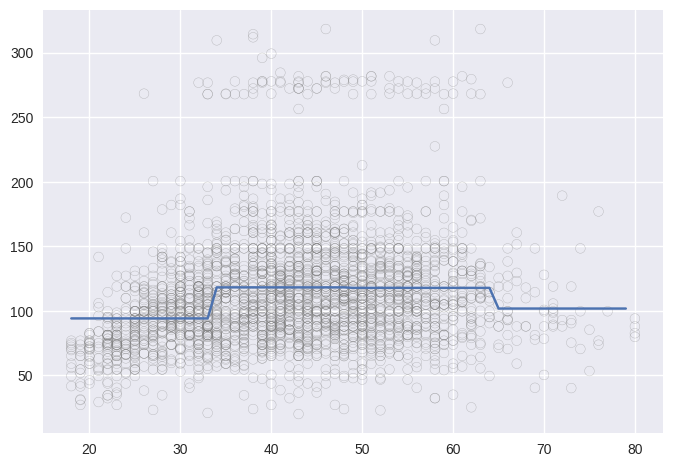

Lab 7.8: Non-linear Modeling#
# imports and setup
%matplotlib inline
import numpy as np
import pandas as pd
import seaborn as sns
import matplotlib.pyplot as plt
pd.set_option('display.max_rows', 12)
pd.set_option('display.max_columns', 12)
pd.set_option('display.float_format', '{:20,.5f}'.format) # get rid of scientific notation
plt.style.use('seaborn') # pretty matplotlib plots
/tmp/ipykernel_3713/1373071590.py:14: MatplotlibDeprecationWarning: The seaborn styles shipped by Matplotlib are deprecated since 3.6, as they no longer correspond to the styles shipped by seaborn. However, they will remain available as 'seaborn-v0_8-<style>'. Alternatively, directly use the seaborn API instead.
plt.style.use('seaborn') # pretty matplotlib plots
7.8.1 Polynomial Regression and Step Functions#
wage = pd.read_csv('../datasets/Wage.csv', index_col=0)
wage.iloc[:, 2:10] = wage.iloc[:, 2:10].apply(pd.Categorical)
from sklearn.preprocessing import PolynomialFeatures
pol = PolynomialFeatures(degree=5, interaction_only=False, include_bias=False)
polf = pol.fit_transform(wage.loc[:, 'age'].values.reshape(-1, 1))
wage['age_2'] = polf[:,1]
wage['age_3'] = polf[:,2]
wage['age_4'] = polf[:,3]
wage['age_5'] = polf[:,4]
wage['wage_250'] = (wage.wage > 250).map({True: 1, False: 0})
X = wage.loc[:, ['age', 'age_2', 'age_3', 'age_4']]
y = wage.wage
from sklearn.linear_model import LinearRegression
lin_reg = LinearRegression(fit_intercept=True)
lin_reg.fit(X, y)
lin_reg.intercept_, lin_reg.coef_
(-184.1541797734385,
array([ 2.12455205e+01, -5.63859313e-01, 6.81068771e-03, -3.20383037e-05]))
# Easy to plot higher polynomial order regressions from seaborn
sns.regplot(x='age', y='wage', data=wage, order=4,
scatter_kws={'alpha': 0.2, 'color': 'gray', 'facecolor': None});

# ANOVA
import statsmodels.api as sm
from statsmodels.formula.api import ols
lin_reg_sm = ols(formula='wage ~ age + age_2 + age_3 + age_4 + age_5', data=wage).fit()
anova_sm = sm.stats.anova_lm(lin_reg_sm, typ=1) # Type 1 for compatibility with the book
anova_sm
| df | sum_sq | mean_sq | F | PR(>F) | |
|---|---|---|---|---|---|
| age | 1.00000 | 199,869.66497 | 199,869.66497 | 125.44432 | 0.00000 |
| age_2 | 1.00000 | 228,786.01013 | 228,786.01013 | 143.59311 | 0.00000 |
| age_3 | 1.00000 | 15,755.69366 | 15,755.69366 | 9.88876 | 0.00168 |
| age_4 | 1.00000 | 6,070.15212 | 6,070.15212 | 3.80981 | 0.05105 |
| age_5 | 1.00000 | 1,282.56302 | 1,282.56302 | 0.80498 | 0.36968 |
| Residual | 2,994.00000 | 4,770,321.68581 | 1,593.29382 | NaN | NaN |
from sklearn.linear_model import LogisticRegression
log_reg = LogisticRegression(fit_intercept=True, C=1e9)
log_reg.fit(X, wage.wage_250)
log_reg.intercept_, log_reg.coef_
(array([-5.64988424e-05]),
array([[-1.12834483e-03, -1.60767974e-02, 5.10936280e-04,
-4.28423096e-06]]))
# only way to get R compatible results from logistic regression? why?
from statsmodels.formula.api import glm
lr_sm = glm(formula='wage_250 ~ age + age_2 + age_3 + age_4',
data=wage,
family=sm.families.Binomial(sm.families.links.logit)).fit()
---------------------------------------------------------------------------
TypeError Traceback (most recent call last)
Cell In[8], line 7
1 # only way to get R compatible results from logistic regression? why?
3 from statsmodels.formula.api import glm
5 lr_sm = glm(formula='wage_250 ~ age + age_2 + age_3 + age_4',
6 data=wage,
----> 7 family=sm.families.Binomial(sm.families.links.logit)).fit()
File /opt/hostedtoolcache/Python/3.8.18/x64/lib/python3.8/site-packages/statsmodels/genmod/families/family.py:932, in Binomial.__init__(self, link, check_link)
929 self.n = 1
930 # overwritten by initialize if needed but always used to initialize
931 # variance since endog is assumed/forced to be (0,1)
--> 932 super(Binomial, self).__init__(
933 link=link,
934 variance=V.Binomial(n=self.n),
935 check_link=check_link
936 )
File /opt/hostedtoolcache/Python/3.8.18/x64/lib/python3.8/site-packages/statsmodels/genmod/families/family.py:94, in Family.__init__(self, link, variance, check_link)
89 if inspect.isclass(link):
90 warnmssg = (
91 "Calling Family(..) with a link class is not allowed. Use an "
92 "instance of a link class instead."
93 )
---> 94 raise TypeError(warnmssg)
96 self.link = link
97 self.variance = variance
TypeError: Calling Family(..) with a link class is not allowed. Use an instance of a link class instead.
age_grid = np.arange(wage.age.min(), wage.age.max()).reshape(-1,1)
X_test = pd.DataFrame(PolynomialFeatures(4, include_bias=True).fit_transform(age_grid),
columns=['Intercept', 'age', 'age_2', 'age_3', 'age_4'])
log_reg_pred = lr_sm.predict(X_test)
plt.scatter(wage.age, wage.wage_250/5, marker='|', color='gray', alpha=0.5)
plt.plot(age_grid, log_reg_pred);
---------------------------------------------------------------------------
NameError Traceback (most recent call last)
Cell In[9], line 6
1 age_grid = np.arange(wage.age.min(), wage.age.max()).reshape(-1,1)
3 X_test = pd.DataFrame(PolynomialFeatures(4, include_bias=True).fit_transform(age_grid),
4 columns=['Intercept', 'age', 'age_2', 'age_3', 'age_4'])
----> 6 log_reg_pred = lr_sm.predict(X_test)
8 plt.scatter(wage.age, wage.wage_250/5, marker='|', color='gray', alpha=0.5)
9 plt.plot(age_grid, log_reg_pred);
NameError: name 'lr_sm' is not defined
age_step, bins = pd.cut(wage.age, 4, retbins=True, right=True)
bins
array([17.938, 33.5 , 49. , 64.5 , 80. ])
wage_step = pd.concat([wage.age, age_step, wage.wage, wage.wage_250],
keys=['age', 'age_step', 'wage', 'wage_250'],
axis=1)
X = pd.get_dummies(wage_step.age_step)
X = X.drop(X.columns[0], axis=1)
y = wage_step.wage
lr_step = LinearRegression(fit_intercept=True)
lr_step.fit(X, y)
lr_step.intercept_, lr_step.coef_
(94.15839203351902, array([24.05349138, 23.664559 , 7.6405917 ]))
age_grid_bins = np.digitize(age_grid.ravel(), bins)
X_test = pd.get_dummies(age_grid_bins).drop(1, axis=1)
lin_pred = lr_step.predict(X_test)
plt.scatter(wage_step.age, wage.wage, marker='o', color='gray', alpha=0.5, facecolor='None')
plt.plot(age_grid, lin_pred);

from statsmodels.formula.api import GLM
lr_sm = GLM(wage_step.wage_250, sm.add_constant(X),
family=sm.families.Binomial(sm.families.links.logit)).fit()
log_pred = lr_sm.predict(sm.add_constant(X_test))
plt.scatter(wage_step.age, wage_step.wage_250/5, marker='|', color='gray', alpha=0.5)
plt.plot(age_grid, log_pred);
---------------------------------------------------------------------------
ImportError Traceback (most recent call last)
Cell In[13], line 1
----> 1 from statsmodels.formula.api import GLM
3 lr_sm = GLM(wage_step.wage_250, sm.add_constant(X),
4 family=sm.families.Binomial(sm.families.links.logit)).fit()
6 log_pred = lr_sm.predict(sm.add_constant(X_test))
ImportError: cannot import name 'GLM' from 'statsmodels.formula.api' (/opt/hostedtoolcache/Python/3.8.18/x64/lib/python3.8/site-packages/statsmodels/formula/api.py)
7.8.2 Splines#
Cubic Spline with specified knots
from patsy import dmatrix
age_spline1 = dmatrix('bs(age, knots=(25,40,60), degree=3, include_intercept=False)',
data=wage,
return_type='dataframe')
age_grid_spline1 = dmatrix('bs(age_grid, knots=(25,40,60), degree=3, include_intercept=False)',
{'age_grid': age_grid},
return_type='dataframe')
spline_reg1 = LinearRegression(fit_intercept=False)
spline_reg1.fit(age_spline1, wage.wage)
spline_pred1 = spline_reg1.predict(age_grid_spline1)
plt.scatter(wage.age, wage.wage, marker='o', color='gray', alpha=0.5, facecolor='None')
plt.plot(age_grid, spline_pred1);
---------------------------------------------------------------------------
ValueError Traceback (most recent call last)
Cell In[14], line 14
11 spline_reg1 = LinearRegression(fit_intercept=False)
12 spline_reg1.fit(age_spline1, wage.wage)
---> 14 spline_pred1 = spline_reg1.predict(age_grid_spline1)
16 plt.scatter(wage.age, wage.wage, marker='o', color='gray', alpha=0.5, facecolor='None')
17 plt.plot(age_grid, spline_pred1);
File /opt/hostedtoolcache/Python/3.8.18/x64/lib/python3.8/site-packages/sklearn/linear_model/_base.py:386, in LinearModel.predict(self, X)
372 def predict(self, X):
373 """
374 Predict using the linear model.
375
(...)
384 Returns predicted values.
385 """
--> 386 return self._decision_function(X)
File /opt/hostedtoolcache/Python/3.8.18/x64/lib/python3.8/site-packages/sklearn/linear_model/_base.py:369, in LinearModel._decision_function(self, X)
366 def _decision_function(self, X):
367 check_is_fitted(self)
--> 369 X = self._validate_data(X, accept_sparse=["csr", "csc", "coo"], reset=False)
370 return safe_sparse_dot(X, self.coef_.T, dense_output=True) + self.intercept_
File /opt/hostedtoolcache/Python/3.8.18/x64/lib/python3.8/site-packages/sklearn/base.py:580, in BaseEstimator._validate_data(self, X, y, reset, validate_separately, cast_to_ndarray, **check_params)
509 def _validate_data(
510 self,
511 X="no_validation",
(...)
516 **check_params,
517 ):
518 """Validate input data and set or check the `n_features_in_` attribute.
519
520 Parameters
(...)
578 validated.
579 """
--> 580 self._check_feature_names(X, reset=reset)
582 if y is None and self._get_tags()["requires_y"]:
583 raise ValueError(
584 f"This {self.__class__.__name__} estimator "
585 "requires y to be passed, but the target y is None."
586 )
File /opt/hostedtoolcache/Python/3.8.18/x64/lib/python3.8/site-packages/sklearn/base.py:507, in BaseEstimator._check_feature_names(self, X, reset)
502 if not missing_names and not unexpected_names:
503 message += (
504 "Feature names must be in the same order as they were in fit.\n"
505 )
--> 507 raise ValueError(message)
ValueError: The feature names should match those that were passed during fit.
Feature names unseen at fit time:
- bs(age_grid, knots=(25, 40, 60), degree=3, include_intercept=False)[0]
- bs(age_grid, knots=(25, 40, 60), degree=3, include_intercept=False)[1]
- bs(age_grid, knots=(25, 40, 60), degree=3, include_intercept=False)[2]
- bs(age_grid, knots=(25, 40, 60), degree=3, include_intercept=False)[3]
- bs(age_grid, knots=(25, 40, 60), degree=3, include_intercept=False)[4]
- ...
Feature names seen at fit time, yet now missing:
- bs(age, knots=(25, 40, 60), degree=3, include_intercept=False)[0]
- bs(age, knots=(25, 40, 60), degree=3, include_intercept=False)[1]
- bs(age, knots=(25, 40, 60), degree=3, include_intercept=False)[2]
- bs(age, knots=(25, 40, 60), degree=3, include_intercept=False)[3]
- bs(age, knots=(25, 40, 60), degree=3, include_intercept=False)[4]
- ...
Cubic spline with specified degrees of freedom
age_spline2 = dmatrix('bs(age, df=6, include_intercept=False)',
data=wage,
return_type='dataframe')
age_grid_spline2 = dmatrix('bs(age_grid, df=6, include_intercept=False)',
{'age_grid': age_grid},
return_type='dataframe')
spline_reg2 = LinearRegression(fit_intercept=False)
spline_reg2.fit(age_spline2, wage.wage)
spline_pred2 = spline_reg2.predict(age_grid_spline2)
plt.scatter(wage.age, wage.wage, marker='o', color='gray', alpha=0.5, facecolor='None')
plt.plot(age_grid, spline_pred2);
---------------------------------------------------------------------------
ValueError Traceback (most recent call last)
Cell In[15], line 12
9 spline_reg2 = LinearRegression(fit_intercept=False)
10 spline_reg2.fit(age_spline2, wage.wage)
---> 12 spline_pred2 = spline_reg2.predict(age_grid_spline2)
14 plt.scatter(wage.age, wage.wage, marker='o', color='gray', alpha=0.5, facecolor='None')
15 plt.plot(age_grid, spline_pred2);
File /opt/hostedtoolcache/Python/3.8.18/x64/lib/python3.8/site-packages/sklearn/linear_model/_base.py:386, in LinearModel.predict(self, X)
372 def predict(self, X):
373 """
374 Predict using the linear model.
375
(...)
384 Returns predicted values.
385 """
--> 386 return self._decision_function(X)
File /opt/hostedtoolcache/Python/3.8.18/x64/lib/python3.8/site-packages/sklearn/linear_model/_base.py:369, in LinearModel._decision_function(self, X)
366 def _decision_function(self, X):
367 check_is_fitted(self)
--> 369 X = self._validate_data(X, accept_sparse=["csr", "csc", "coo"], reset=False)
370 return safe_sparse_dot(X, self.coef_.T, dense_output=True) + self.intercept_
File /opt/hostedtoolcache/Python/3.8.18/x64/lib/python3.8/site-packages/sklearn/base.py:580, in BaseEstimator._validate_data(self, X, y, reset, validate_separately, cast_to_ndarray, **check_params)
509 def _validate_data(
510 self,
511 X="no_validation",
(...)
516 **check_params,
517 ):
518 """Validate input data and set or check the `n_features_in_` attribute.
519
520 Parameters
(...)
578 validated.
579 """
--> 580 self._check_feature_names(X, reset=reset)
582 if y is None and self._get_tags()["requires_y"]:
583 raise ValueError(
584 f"This {self.__class__.__name__} estimator "
585 "requires y to be passed, but the target y is None."
586 )
File /opt/hostedtoolcache/Python/3.8.18/x64/lib/python3.8/site-packages/sklearn/base.py:507, in BaseEstimator._check_feature_names(self, X, reset)
502 if not missing_names and not unexpected_names:
503 message += (
504 "Feature names must be in the same order as they were in fit.\n"
505 )
--> 507 raise ValueError(message)
ValueError: The feature names should match those that were passed during fit.
Feature names unseen at fit time:
- bs(age_grid, df=6, include_intercept=False)[0]
- bs(age_grid, df=6, include_intercept=False)[1]
- bs(age_grid, df=6, include_intercept=False)[2]
- bs(age_grid, df=6, include_intercept=False)[3]
- bs(age_grid, df=6, include_intercept=False)[4]
- ...
Feature names seen at fit time, yet now missing:
- bs(age, df=6, include_intercept=False)[0]
- bs(age, df=6, include_intercept=False)[1]
- bs(age, df=6, include_intercept=False)[2]
- bs(age, df=6, include_intercept=False)[3]
- bs(age, df=6, include_intercept=False)[4]
- ...
Natural Spline
age_spline3 = dmatrix('cr(age, df=4)',
data=wage,
return_type='dataframe')
age_grid_spline3 = dmatrix('cr(age_grid, df=4)',
{'age_grid': age_grid},
return_type='dataframe')
spline_reg3 = LinearRegression(fit_intercept=False)
spline_reg3.fit(age_spline3, wage.wage)
spline_pred3 = spline_reg3.predict(age_grid_spline3)
plt.scatter(wage.age, wage.wage, marker='o', color='gray', alpha=0.5, facecolor='None')
plt.plot(age_grid, spline_pred3);
---------------------------------------------------------------------------
ValueError Traceback (most recent call last)
Cell In[16], line 12
9 spline_reg3 = LinearRegression(fit_intercept=False)
10 spline_reg3.fit(age_spline3, wage.wage)
---> 12 spline_pred3 = spline_reg3.predict(age_grid_spline3)
14 plt.scatter(wage.age, wage.wage, marker='o', color='gray', alpha=0.5, facecolor='None')
15 plt.plot(age_grid, spline_pred3);
File /opt/hostedtoolcache/Python/3.8.18/x64/lib/python3.8/site-packages/sklearn/linear_model/_base.py:386, in LinearModel.predict(self, X)
372 def predict(self, X):
373 """
374 Predict using the linear model.
375
(...)
384 Returns predicted values.
385 """
--> 386 return self._decision_function(X)
File /opt/hostedtoolcache/Python/3.8.18/x64/lib/python3.8/site-packages/sklearn/linear_model/_base.py:369, in LinearModel._decision_function(self, X)
366 def _decision_function(self, X):
367 check_is_fitted(self)
--> 369 X = self._validate_data(X, accept_sparse=["csr", "csc", "coo"], reset=False)
370 return safe_sparse_dot(X, self.coef_.T, dense_output=True) + self.intercept_
File /opt/hostedtoolcache/Python/3.8.18/x64/lib/python3.8/site-packages/sklearn/base.py:580, in BaseEstimator._validate_data(self, X, y, reset, validate_separately, cast_to_ndarray, **check_params)
509 def _validate_data(
510 self,
511 X="no_validation",
(...)
516 **check_params,
517 ):
518 """Validate input data and set or check the `n_features_in_` attribute.
519
520 Parameters
(...)
578 validated.
579 """
--> 580 self._check_feature_names(X, reset=reset)
582 if y is None and self._get_tags()["requires_y"]:
583 raise ValueError(
584 f"This {self.__class__.__name__} estimator "
585 "requires y to be passed, but the target y is None."
586 )
File /opt/hostedtoolcache/Python/3.8.18/x64/lib/python3.8/site-packages/sklearn/base.py:507, in BaseEstimator._check_feature_names(self, X, reset)
502 if not missing_names and not unexpected_names:
503 message += (
504 "Feature names must be in the same order as they were in fit.\n"
505 )
--> 507 raise ValueError(message)
ValueError: The feature names should match those that were passed during fit.
Feature names unseen at fit time:
- cr(age_grid, df=4)[0]
- cr(age_grid, df=4)[1]
- cr(age_grid, df=4)[2]
- cr(age_grid, df=4)[3]
Feature names seen at fit time, yet now missing:
- cr(age, df=4)[0]
- cr(age, df=4)[1]
- cr(age, df=4)[2]
- cr(age, df=4)[3]
Couldn’t find a way to implement smooth.spline() function in Python
7.8.3 GAMs#
year_spl = dmatrix('cr(year, df=4)',
data=wage,
return_type='dataframe').drop('Intercept', axis=1)
age_spl = dmatrix('cr(age, df=5)',
data=wage,
return_type='dataframe').drop('Intercept', axis=1)
edu_gam = pd.get_dummies(wage.education).iloc[:, 1:]
wage_gam = pd.concat([wage.wage, year_spl, age_spl, edu_gam], axis=1)
X = wage_gam.iloc[:, 1:14]
y = wage_gam.wage
gam = LinearRegression(fit_intercept=True)
gam.fit(X, y)
gam.intercept_, gam.coef_
(447295243734966.25,
array([-2.89259755e+14, -2.89259755e+14, -2.89259755e+14, -2.89259755e+14,
-1.58035489e+14, -1.58035489e+14, -1.58035489e+14, -1.58035489e+14,
-1.58035489e+14, 1.08027344e+01, 2.31533203e+01, 3.78828125e+01,
6.23183594e+01]))